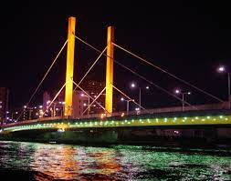
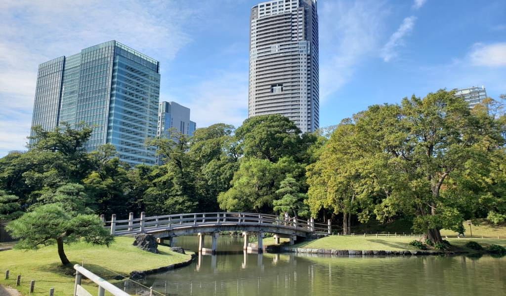
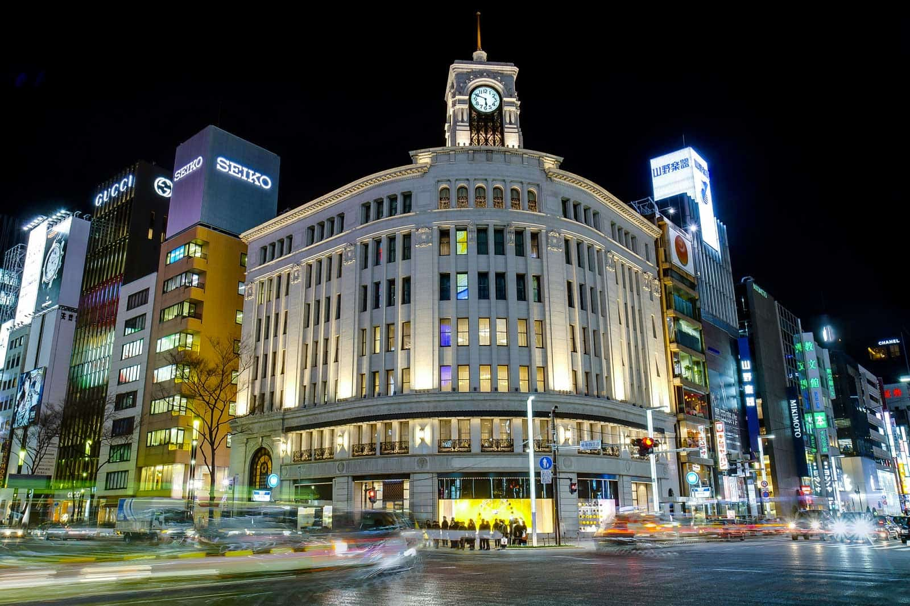
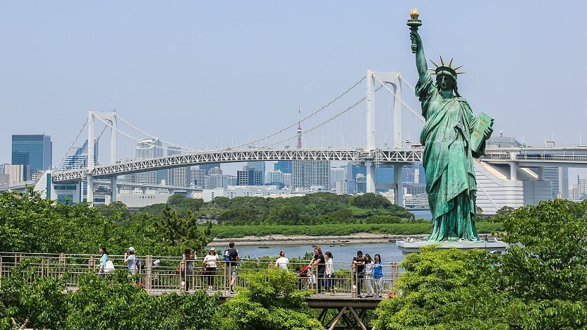

Tokyo has many notable locations that tourists often visit
Standing at 3,776 meters, Mt. Fuji is the tallest peak in Japan, the result of volcanic activity that began approximately 100,000 years ago. Today, Mt. Fuji and the surrounding area are a popular recreational destination for hiking, camping and relaxation. {Information Based from Japan.travel}

The current Shin-Ohashi bridge was replaced in 1976, but its wooden predecessor appears in a woodblock print by Utagawa Hiroshige, and was the model of Van Gogh's "Bridge in the Rain."Passengers pass underneath the bridge when riding the Water Bus from Odaiba to Asakusa {Information based from gotokyo.otg}

Asakusa’s Sensō-ji Temple is a tremendously popular destination for visitors. Beyond the iconic Kaminarimon Gate is Nakamise Dori souvenir-shopping street, which leads to a complex of fascinating religious structures.{Information based from gotokyo.otg}

Hamarikyu Gardens is a great place to relax and to reflect on the history of Tokyo when it was still called Edo. Different feudal lords used the space for various purposes, ranging from recitals and rice cultivation to military training and falconry. {Information based from gotokyo.otg}

Ginza continues to present Tokyo at its most elegant and luxurious. Come here for the ultimate in shopping and delicious gourmet cuisine {Information based form gotokyo.otg}

Odaiba offers fascinatingly diverse attractions on a large expanse of reclaimed land in Tokyo Bay. Recommended for lovers of all ages: an evening bayside stroll, admiring the illuminated Rainbow Bridge. {Information based from gotokyo.otg}